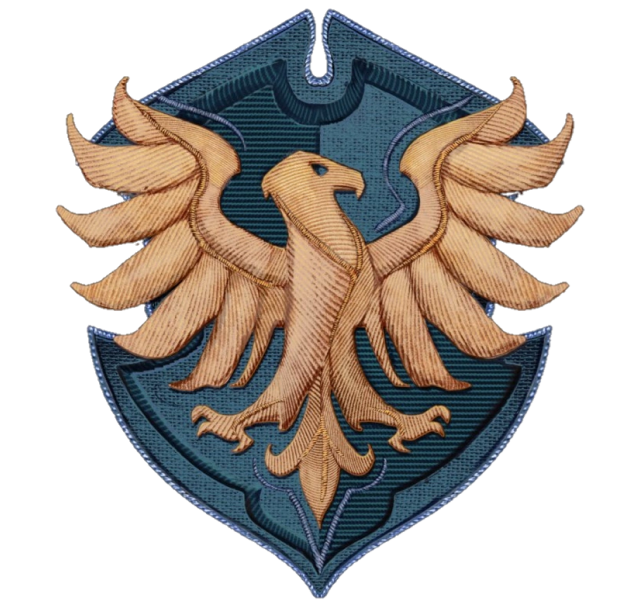
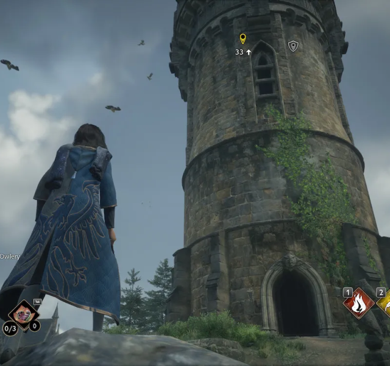

RAVENCLAW
Casa Ravenclaw
Ravenclaw, una de las cuatro casas de la venerable escuela de magia Hogwarts, se destaca por su sabiduría, ingenio y amor por el aprendizaje. Fundada por Rowena Ravenclaw, esta casa valora la inteligencia y la creatividad, y acoge a aquellos estudiantes que muestran una mente aguda y una sed insaciable de conocimiento. Los alumnos de Ravenclaw son conocidos por su intelecto y su capacidad para pensar de manera innovadora. Son individuos curiosos y ávidos de aprender, siempre buscando nuevos desafíos y persiguiendo el conocimiento con pasión y determinación. Además de su inteligencia, los Ravenclaw también son reconocidos por su independencia y su espíritu de exploración. Son estudiantes reflexivos y analíticos, capaces de resolver problemas difíciles y encontrar soluciones creativas a los desafíos que enfrentan. En Ravenclaw, se valora la originalidad y la búsqueda del conocimiento por encima de todo. Los alumnos son alentados a cuestionar el status quo y a pensar de manera crítica, reconociendo que el verdadero aprendizaje se encuentra en la exploración y el descubrimiento. En resumen, los Ravenclaw son estudiantes innovadores y apasionados, cuyo amor por el aprendizaje los impulsa a alcanzar nuevas alturas en su búsqueda de la verdad y la sabiduría.
Sala común de Ravenclaw
La sala común de Ravenclaw se encuentra en el cuarto piso de la gran escalera de Hogwarts. Para acceder a ella, los estudiantes deben resolver un acertijo planteado por un águila guardiana en la entrada. Una vez que el acertijo ha sido respondido correctamente por un estudiante de Ravenclaw, la puerta se abrirá para permitirles el acceso. Una vez dentro, te encontrarás inmerso en un ambiente de serenidad y conocimiento. Las paredes blancas y los muebles de tonos azules crean una atmósfera fresca y tranquila, mientras que las alfombras suaves añaden un toque de comodidad. La sala está adornada con numerosas bibliotecas repletas de libros, globos terráqueos y telescopios, reflejando la profunda sabiduría y curiosidad intelectual de los miembros de Ravenclaw. Un arpa en una esquina de la sala agrega un toque musical y mágico al ambiente, llenando el espacio con melodías suaves y envolventes. Es un lugar donde los estudiantes de Ravenclaw pueden estudiar, reflexionar y debatir sobre una amplia gama de temas, y donde la búsqueda del conocimiento es valorada y fomentada en todo momento.
Jugabilidad
Únete a Ravenclaw en Hogwarts Legacy y sumérgete en un mundo de sabiduría, creatividad y curiosidad sin límites. Como miembro de Ravenclaw, tendrás la oportunidad de explorar los misterios del universo junto a tu amigo Amit Thakkar, un chico inteligente y apasionado por la astronomía y el estudio de las estrellas. Vistiendo el uniforme azul con detalles de águilas, mostrarás tu orgullo por pertenecer a Ravenclaw y representarás los valores de inteligencia y perspicacia que caracterizan a esta casa. Además, mientras exploras el mundo mágico, tendrás más probabilidades de encontrar prendas de vestir de color azul que reflejen tu lealtad a Ravenclaw y al majestuoso águila, el emblema de la casa. La misión especial de Ravenclaw es la misión más básica a comparación de la mision especial de las demás casas. Esta misión te llevará con el renombrado creador de varitas, Ollivander, quien te dará una tarea. Ollivander te pedirá que vayas a la lechucería de Hogwarts y consigas fragmentos de estatua para poder conseguir la ayuda de un fantasma.
